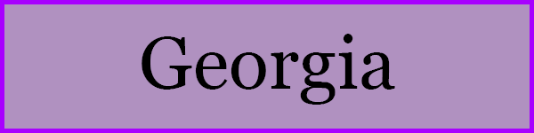
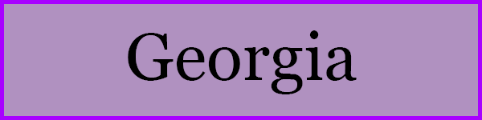
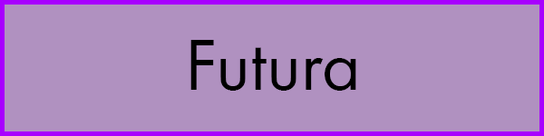
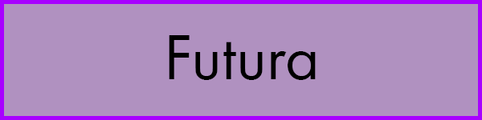
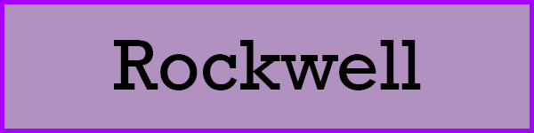
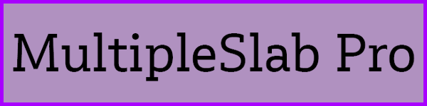
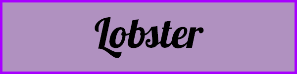
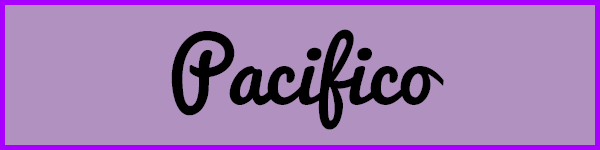
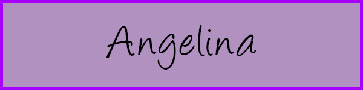

Fonts are everywhere. Whether you're scrolling through a website, reading a book, or even checking out a logo, typography plays
a huge role in how we experience text. Most people don't spend a lot of time thinking about what makes one font different from
another but I do!
Serif Fonts
Serif fonts are those traditional fonts with little "feet" or "tails" at the ends of the letters. These extra strokes are what
give serif fonts their signature look. The idea behind serifs is that they help guide the reader's eyes along a line of text,
making them a popular choice for printed material.
Examples:
 

Sans-Serif Fonts
Sans-serif fonts are just as they sound: "sans" means "without," so these fonts don’t have those little feet or tails. They’re
sleek, modern, and often feel more minimalistic than their serif counterparts. Sans-serifs are especially popular for digital
use because they’re super easy to read on screens.
Examples:
 

Slab Serif Fonts
Slab serif fonts are like the big, bold cousins of serif fonts. Instead of delicate little feet, slab serifs have thick,
block-like ends on the letters. This gives them a stronger, more powerful appearance. They’re great for grabbing attention.
Examples:


Script Fonts
Script fonts mimic handwriting or cursive writing. They’re often used to add a personal, elegant touch to designs. Some look
like fancy calligraphy, while others are more relaxed and playful. Script fonts aren’t always the easiest to read, especially
in large blocks of text.
Examples:


Display Fonts
Display fonts are designed for big, bold headlines or titles. They’re not meant to be used for body text (because they can
be hard to read in smaller sizes), but they’re perfect for catching attention in large formats.
Examples:

Handwritten Fonts
Handwritten fonts are a type of serif or sans-serif font that has more organic, natural shapes. They’re designed to look natural
and relaxed. These fonts are great when you want your design to feel human and approachable.
Examples:

Back to Typography